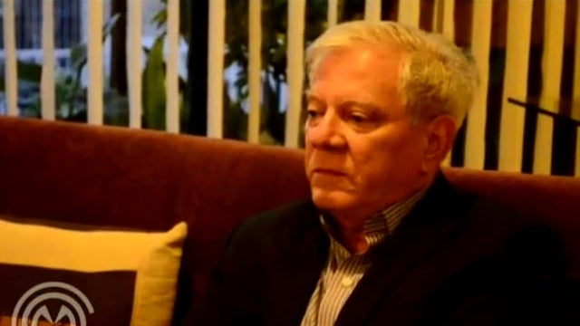
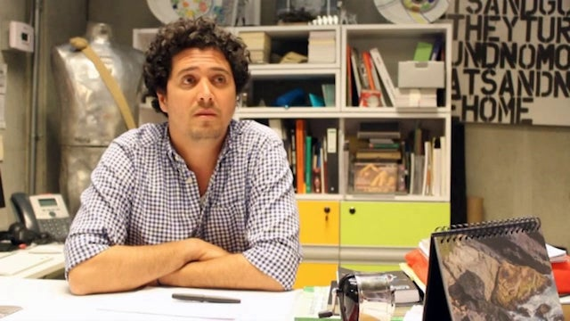

Composición cuyo material es la
obra de los otros.
LAEXCUSA
Nicole van Dijk
Paul Willemsen
Santiago Rueda
Jelle Bouwhuis
Rogier Cloin
George Rivera
Catalina Acosta Carrizosa
David Maroto
Amanda de la Garza
Lucas Ospina
amaCollective
Franklin Aguirre
Nicolás Gómez Echeverri

Álvaro Medina
Eduardo Serrano
Fernando Castro Flórez
Carlos Salas Silva
Luis Gerardo Morales
Galit Eilat / Oren Sagiv
Museo de la Basura
Rafael López Guzmán
José Antonio Navarrete
Mario de Souza Chagas
Fabíola Andréa Silva
Nydia Gutiérrez
Marília Xavier Cury
Sandra de la Torre Lacerda

Oscar Roldán-Alzate
Fernando Valencia Vélez
Laboratorio Cano 2013
Fernando Guinard
Jaime Cerón Silva
Cesar Ernesto Agudelo Moreno
Guillermo Vanegas Flórez
Eduardo Bernal Gómez
Alejandro Burgos Bernal
Olga Acosta Luna
Camilo de Mello Vasconcellos
Camilo Sánchez Arango
Sandra Rengifo Peláez
William López Rosas
Isabel Tejeda Martín
×